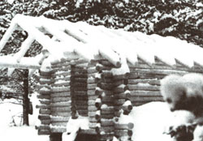
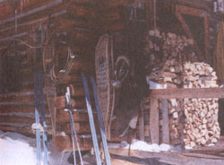
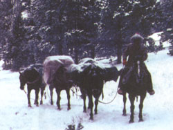
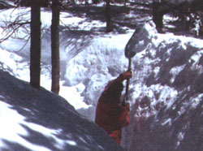
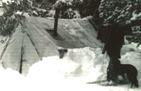

A couple dares to start a new life in the Rocky Mountains
Story and photographs
HAVE YOU EVER thought of livingin some remote place, far beyond the end of tire tracks? Maybe you've thoughtof a country where you could make your way to some high, rockbound rim and look over avast sweep of mountain ranges where tall, snow-capped peaks reach for blue sky. In yourmind's eye, perhaps you saw long, grassy expanses appear ing as emerald islands in adarker green sea of pine and spruce. And have you ever dreamed of peering into somedark, forbidding canyon, where a white-water stream plunges and splashes over granite boulders in a violent rush toward lower country?
Mary and I thought about a country like that for over 30 years. Finally, there came a day when we pulled stakes, loaded our outfit on a string of pack horses, and headed up the mountain. At 8,000 feet, we pitched our tent. Working all through the winter, we built a cabin. It became our home, summer and winter.
If you've got the time to listen for a spell, then pull up a chair, and we'll share our adventure with you...
Some years back on a bright day in early June, Mary and I rode our horses up a mountain to start a high-country venture that changed our lives forever. I recall the day in detail. The sun, bearing down between scattered clouds, promised grassgrowing heat well before noon. Buttercups and lupine splashed the open slopes with yellow and blue. I remember those details, because they came at a time when we were phasing out an important era in our lives, and commencing another one. That day will stay with me forever...
Mary and I reined in our horses at a viewpoint along the rough mountain trail. The climb along the side of Gunshot Canyon was steep, and experience told us to go slow and rest often. When we turned in our saddles, we allowed our eyes to sweep over a good chunk of cow country, where foothills and meadows stretched out as a rolling carpet of lush, green grass. Far below us, we could make out a red and white cluster of buildings, the headquarters of the familyowned cattle ranch where we had worked for many years. We saw the pastures we had come to know by name, and the rooftops of the homes and barns which made up Deer Creek Place.
We reined our horses around and continued up the trail. I was reminded that the new life we were heading into would cause us to face a completely new set of chal lenges. Before the sun set that night, we would be camped on the privately owned, summer range of the ranch. In that primitive setting, we would live and work.
First, we need ed to build a house of logs. That done, I would take on the job of caring for whatever cattle the ranch pastured up there on our end of the mountain. I also planned to ride for a cattle association which ran stock on a fee basis.
I looked back over my shoulder. Mary met my eyes and smiled without speaking. As we looked down on Deer Creek Place, we found it difficult to keep nostalgia from creeping in. We had lived here for a long time, and considered it our home. Now we would be building our own home here.
The first step to building our home was cutting down trees for logs, and then skidding (hauling them to the building site), a process which made me extremely apprehensive. Through the years, I had spent more time chasing cows than operating a chain saw, and there was a lot about logging I didn't know.
I well remember the first trees I felled. I looked up the trunk of one of those lodgepoles and thought it reached halfway to the sky. By the time I started the chain saw and bent over to make my cut, I had a feeling in my stomach like I get when I think a horse is about to buck me. But time and experience cure many things, and as time went on, I toughened to the job and learned how to work in the timber. As one day moved into the next, my skid trails reached back like the branches of a tree. After several days (and much fatigue), I stockpiled all of the logs ready to be moved down to our building site.
The move was another learning experience. I started by harnessing my horse, Nip, up to my skid sled, a toboggan-like implement on which I would secure the butt ends of logs I needed to move. At the foot of the steep trail leading up to the logging area, I rested a moment. The trail looked long and treacherous. In a short while, I would be coming down that chute with a whole load of logs. Nip stepped nervously in place.
As we topped out at the head of the trail, I was puffing hard. I glanced at Nip's flanks, and saw that the climb hadn't fazed him. After we reached the top, the trail followed an easy grade to the logging area, and I turned Nip around and stopped the skid sled. I unhooked the tugs which hitched the horse to the sled, and tossed them aside so the horse couldn't step on them. Then I folded the lines across his rump and started to load.
Wiping some sweat out of my eyes with a shirt sleeve, I pulled up my gloves until they were snug. Then I gathered up the long. leather lines, and Nip turned his head and watched as I hooked up the tug chains. I looked ahead at the route I would take. I had a straight shot for 25 yards.
Speaking quietly to Nip, I eased him forward into the collar, and the horse shifted his front end from side to side, waiting. I tightened my grip on the lines and gave him his cue. The big sorrel leaned forward; the tugs tightened. Nip lowered his head and dug his feet into the soft earth. As he moved ahead, the load of lodgepole pine behind him moved, too. I was doing it!
As we looked down on Deer Creek Place, nostalgia began creeping in. We had lived there along time.
But the trail bent to the left on a slight upgrade, and as we came up fast, it looked dangerously narrow for horse and man and load. I had heard of men breaking a leg, caught between skidding logs and standing trees. Nip jerked his head and flicked his ears, as though measuring the space ahead, and then we made our entry head-on. I shifted my hips toward the sled and tucked in an elbow, and we slipped through without scraping a log. And so it went until we reached the top of the hill.
Next, I somehow had to get Nip, myself, and the logs safely back down the trail. I straightened up, and looked at the route I would have to travel. The trail looked steep and long, but I gave Nip a vocal command, and he started down. It was easier for the horse to move the load on the downgrade, and he slowed down his pace a bit. It was real hard to keep the skid sled on the trail. I had to keep Nip climbing the bank on the uphill side of the trail, stepping sideways to hold the head of the load in place.
Bounding over rocks like a mountain goat, I used my eyes to search for safe passage for my feet. This was no time to stumble and fall, and risk losing my grip on the lines. I watched both the direction Nip's head took, and the aim of the front of the sled-I never turned to look at the logs. Where the head went, the tail had to follow. When we finally reached the bottom, I breathed easier. Neither man nor beast had been hurt, and we had never lost a log.
I like to peel logs. That is, if I have a good sharp drawknife. Well, I did have a good sharp drawknife. Only it was close to 100 years old. The tool had the look of iron shaped by the hand of a master craftsman. As I sat on a log, carefully working an oil stone along the knife's well-worn blade, I felt I had a legacy of a sort in my handsa legacy to use and respect, as my father had before me.
One of the nice things about peeling logs is that you get a quick return on your investment of energy. Each time you draw that sharp blade to you, a slice of brown, scaly bark falls to the ground. In its place, new wood shows clean and smooth. Putting a log up on sawhorses brings it to a convenient height. All a man has to do is walk along, and make sure the drawknife does its job.
As you peel along and admire your work, you can also learn something of tree history. For instance, blue-stained logs under the bark tell you that pine beetles have brought the spores of bluestain fungi into the tree. These sprout, and clog the tree's waterconducting system. The tree weakens and dies of thirst. Here and there, pock marks show where a woodpecker searched for eggs and larvae of the invading beetle.
By now you have warmed up a bit, and your arms need a short rest. You walk to the butt-end of the log and count the rings of annual growth. In the early life of the tree. the rings are well-spaced: you know its roots took in good moisture those years. You count along, and the distance between the rings gets closer. Those were the years when water was scarce. You begin your count again because you lost track as you thought about the tree's history instead of the tally. You start counting again. Fifty annual rings. Fifty years of tree life.
Mary and I peeled many logs together; she at one end, me at the other. As we worked along, we talked and laughed a lot. Mary said she liked to peel logs because the job built up her muscles, and I couldn't help but wonder what it would be like to be married to a muscle-bound woman weighing 110 pounds.
Finally the day came when we got to set the sill logs on the foundation piers. We selected the biggest, straightest, and soundest logs from our pile of peeled logs to use as sills. We cut saddle notches in the first-cross logs, and set them in place on the sills.
We then spiked floor joists on 24-inch centers along the sills and laid the subfloor. Each time we started a new course of logs in the wall, we reversed the butt ends, in order to keep the top line level. The logs averaged about eight inches at the butt end.
I found that building with logs did not go quite as fast as I had planned. I proved to be especially slow at fitting the saddle notches-Mary said I was trying to fit logs like a cabinet maker. One evening, just before supper, she threatened to quit if I tried to make one certain notch fit closer.
The summer, on the other hand, moved along too fast. Each day, I measured the distance from the floor to the top of the last-laid log. It seemed it was taking too long for the walls to reach the height where the important plate log could be rolled into place. Nevertheless, each time I walked up the hill toward the tent, I always stopped and turned to evaluate my work from a distance. It was then I was encouraged to go on. I saw that each log laid made the project look more like a house.
We hear a lot about togetherness these days. Well, all I can say is that you don't know anything about togetherness until you've spent the winter in a tent, like the 10' x 12' wall tent we were living in.
I can tell you that we weren't living with much. We had a double bed at the back end of the tent, a Sims stove near the front. We used two canvas folding chairs, and we made a mealtime table by placing a piece of plywood on the bed. Two panniers served as kitchen cabinets, and a couple of army ammunition boxes worked as our kitchen storage. That was about it.
We did deal pretty well with the cold up there. Our coldest morning that winter was 28°F below zero, but Mary and I weren't strangers to weather like that. It was typical of the working conditions a rancher operating in the Rocky Mountain West contends with almost any winter. Usually I was the first to stir during those morning. The tent was as cold as a deep freeze when I'd crawled out. But not long, after I fired up the Sims stove, my teeth usually stopped chattering. Then I answered Mary's question about what temperature showed on the outside thermometer. Some mornings I figured it was best not to tell her.
I'd put water on to heat for coffee, cereal. and washing-up. Next, I'd hang our clothes on a line over the stove to thaw out, and then hop back in bed. Invariably. Mary would let out a yelp when my cold body made contact with her warm body. (She never thought it was funny when I laughed.) Then, after awhile, Mary would get up and cook breakfast. It was a good arrangement, really.
We also talked a lot during this time. We discussed everything, from philosophizing on issues past and present, to our specific plans for the next day. We recalled to mind friends we had known throughout the years, and the bearing those people had on our lives. Reminiscing about our earlier years, when our children were growing up, was a topic we returned to often.
One thing I'll never forget was the day Mary gave me my first haircut up on the mountain. She sat me atop a chopping block in the middle of the tent with the official barber's cape pinned around me. At my urgent request, she warmed up the hand clippers and scissors. Then she went to work. It was a painful tug and pull for over an hour, and Mary seemed to hold up under the stress much better than I did.
That was 30 years ago, when my hair was red and wavy. Eventually it turned white, but still she cuts my hair. Although I've never checked my figures, Mary tells me she has given me $1,260.75 worth of services. She insists on adding, "That doesn't include interests and taxes."
We also passed quite a bit of time reading, and enjoying the music that came out of our cassette player. We wrote letters, even though they might not get mailed for four to six months. And we reread letters we received from the special people in our lives. Above all, we enjoyed that exclusive feeling that came from sharing this unique adventure.
One night after dark, we heard someone hail the camp. I walked down to the east gate, and there was Chip, a young fellow from one of the nearby hunting camps. He led a pack mule, and in the dim light, I saw Chip's teeth showing white in a big smile. He slipped a wire cage out from under the pack tarp, and I heard something call, "Meow." Chip handed me the cage, and with a cheery goodbye, he stepped aboard his saddle mare and led the mule through the timber, headed for his camp.
I carried the cage into the tent. There, under the light of the lantern, I set it on the bed, and Mary walked over. I opened the door to the cage, and a little black and white kitten with long hair walked out. She looked around, blinking her eyes. We named her Capuchin.
Eventually Capuchin followed Mary everywhere. With tail pointed straight up, the kitten would walk along the ridgelog of our cabin. After reaching the rafter that led her to the place where Mary worked, she'd strut down that timber with absolute feline confidence. Occasionally, she would perch right on top of Mary's shoulder. The swinging of Mary's big framing hammer and the sound of nails being driven home never fazed the kitten.
Another instant friend was Tasha, a black puppy, who was a Christmas gift from some very good friends. Tasha arrived at Deer Creek Place in one of those plastic carriers the airlines refer to as sky kennels. She was a weanling puppy, solid black, and she was whimpering. I'll never forget getting her up the mountain. Like just about everything that came to our camp, she traveled by pack horse.
The puppy never whimpered as we climbed the steep trail. I wished she would bark, or cry, or do whatever puppies are supposed to do. I knew how much Mary was looking forward to the arrival of the puppy, and I didn't want anything to happen to it. I thought it would be okay, as I figured some of the warmth from the horse would keep the puppy warm.
Sure enough, it did. We made the trip in good shape. I was relieved to be able to carry the sky kennel and its cargo into the warn cabin. When we opened the door of the kennel, the black German shepherd puppy tottered out and looked around with big, brown eyes. They came to rest on Mary. She picked Tasha up, and the puppy instantly became one of the family.
It was when I got the ridge and the rafters up, with Mary's help, that I finally felt our house was taking shape. We still didn't have a roof over our heads yet, but we knew that was soon to come. I shoveled and swept snow off the pile of one-by-eight boards that had been flown in by helicopter earlier. I set up sawhorses near the cabin where we measured, squared, and cut. Then I passed the boards up to Mary for nailing to the rafters with twentypenny galvanized nails.
It was a happy day for Mary when she drove the last nail through the heavy-rolled roofing.
At the time we were putting down the rolled roofing, morning temperatures ranged from zero to 10 above. We used tarred felt paper under the 90-pound roofing. The cold temperature was no problem for the tar paper, but a big problem for the 90-pound roofing. It didn't take much handling to tear it. So we warmed it alongside the stove in the tent to help soften it. Later, we'd set it outside for the sun to take some of the stiffness out.
It was a happy day for Mary when she drove the last roofing nail through the heavyrolled roofing. She climbed down the ladder, went inside the cabin, and walked around looking up at the underside of the roof. No daylight showed, and Mary smiled. "Now," she said, "I'm just like other women. I don't have to shovel snow out of my house anymore."
Next, I set up the stone piers for the porch sill logs. I wanted good, solid gravel to set those big, flat base rocks on. It took a bit of digging to get there. The ground was frozen rock-hard. So first, I had to thaw the ground. I got a good fire going, put on some short logs, and then let it smolder all night long. By morning, the ground was more willing to accept digging bar and shovel.
The porch got built, I cut out a doorway, and with the chain saw, I cut the marked openings for windows. I remember telling Mary that I would start on the door come morning.
"Door!" Mary exclaimed. "Who needs a door? It looks the Hilton already. Let's just move in!"
So the next morning, instead of building a proper door, I hung a tarp from nails driven into the door frame header, and we had ourselves a door.
But I did eventually get around to building us a real door. It was of rather heavy construction, worthy of being hung in the doorway of a house of logs. We planned it as a Dutch door, and though I built and hung it one piece, I cut it in half with a handsaw. When the weather is right and the top half of the door is open, it makes a person feel much closer to the country around him.
We continued with our quick and anx ious pace. We put tarred felt paper under tongue-and-groove fir for flooring, which worked very well, and when we'd nailed the last floor board in place, Mary and I got to our feet and stretched the kinks out of our backs.
The furniture was the last thing we needed to do. I listened to Mary tell me where to build the bed, table, and shelves. I could tell she wanted me to hurry up. So that first hurry-up furniture got built, and we set up our cook stove. I laid split kindling in the untried firebox, and Mary stood by with match in hand, ready to light off. With the drafts open, the fire soon made popping and crackling noises.
"Just think," she said, "a brand-new stove in a brand-new house. I think I'll go up to the tent and start packing." We both did. And then we moved into our new home.
We enjoyed cabin living from the start. Just looking at the wall logs, and up at the ridge and rafters gave us a certain satisfaction we had never known before. Working together, we had put a roof over our heads.
As each year passed, Mary and I had more reason to be convinced that living and working in the high country year-round was the right thing for us to do. We enjoyed the whole concept of being pioneers. Our job of taking care of cattle in the summer allowed us to learn new back-country ranges; each winter we continued to improve our cabin. It was a good life.
Editor's note: Edward Mark McGough has made his living on cattle ranches in California, Colorado, and Wyoming for many years. He is the author of three young-adult westerns, in addition to Far Beyond the Ridge, from which this material has been excerpted. The book costs $11.50 postpaid, and is available from High Plains Press, PO. 123, Glendo, Wyoming, 82213.
|
|
 |
 |
|
 |
 |
 |